Contents
- 1.a
- 1.b
- Transfer function from a
- Frequency grid
- Search ranges for PI controller
- Check closed-loop stability
- Gain and phase margins
- Sensitivity function
- Find bandwidth where S crosses -3 dB from below
- Store best controller
- Plots
- 1.c mixed sensitivity weights
- Sensitivity bound Bs
- Control effort bound Bc
- Complementary sensitivity bound Bt
- Plot design bounds
- H-infinity mixed sensitivity synthesis
- Closed-loop functions
- weighted plots
- Check T at 500 Hz
- Check DC gain of S
- Physical bound plots
- 1.d
- Loop transfer functions
- Gain and phase margins
- Bode plot of controllers
- Bode plot of loop transfer functions
clear; clc; close all;
1.a
load("npresp.mat", "Gfr") whos order = 6; G = fitfrd(Gfr, order); G = minreal(tf(G)); disp('Fitted transfer function G(s):') G figure; bode(Gfr,'b',G,'r--'); grid on; legend('Experimental FRD','Fitted G(s)'); title(['Nano-positioning Stage: FRD Fit, Order = ', num2str(order)]); saveCurrentFigure('2a_frd_fit');
Name Size Bytes Class Attributes
Gfr 1x1 43073 frd
Fitted transfer function G(s):
G =
0.08876 s^6 - 876.1 s^5 + 1.136e07 s^4 - 4.345e10 s^3 + 4.097e14 s^2
- 2.095e17 s + 3.082e21
------------------------------------------------------------------------
s^6 + 1021 s^5 + 7.856e07 s^4 + 5.129e10 s^3 + 1.342e15 s^2 + 3.65e17 s
+ 5.421e21
Continuous-time transfer function.
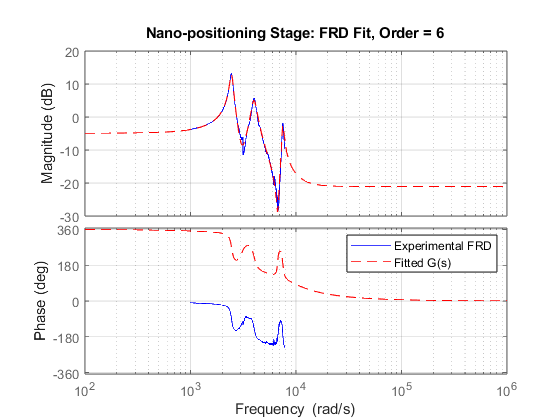
1.b
Transfer function from a
s = tf('s'); G = (0.08876*s^6 - 876.1*s^5 + 1.136e7*s^4 - 4.345e10*s^3 ... + 4.097e14*s^2 - 2.095e17*s + 3.082e21) / ... (s^6 + 1021*s^5 + 7.856e7*s^4 + 5.129e10*s^3 ... + 1.342e15*s^2 + 3.65e17*s + 5.421e21); G = minreal(G);
Frequency grid
w = logspace(-4,6,8000); % rad/s
Search ranges for PI controller
Kp_list = logspace(-4,4,200); Ki_list = logspace(-2,8,250); best_bw = -inf; best_Kp = NaN; best_Ki = NaN; best_C = []; for i = 1:length(Kp_list) Kp = Kp_list(i); for j = 1:length(Ki_list)
Ki = Ki_list(j);
Cpi = Kp + Ki/s;
L = minreal(G*Cpi);
Check closed-loop stability
CL = feedback(L,1);
if ~isstable(CL)
continue;
end
Best PI controller found:
Kp = 0.164468
Ki = 378.716
Bandwidth = 37.163462 Hz
Gain margin = 1.661270
Phase margin = 93.707720 deg
CPI =
0.1645 s + 378.7
----------------
s
Continuous-time transfer function.
Gain and phase margins
[GM, PM] = margin(L);
if isempty(GM) || isempty(PM) || isnan(GM) || isnan(PM)
continue;
end
if GM < 1.5 || PM < 75
continue;
end
Sensitivity function
S = feedback(1,L);
[magS,~,wout] = bode(S,w);
magS = squeeze(magS);
Find bandwidth where S crosses -3 dB from below
target = 10^(-3/20);
idx = find(magS(1:end-1) < target & magS(2:end) >= target, 1, 'first');
if isempty(idx)
continue;
end
wbw = wout(idx); % rad/s
fbw = wbw/(2*pi); % Hz
Store best controller
if fbw > best_bw best_bw = fbw; best_Kp = Kp; best_Ki = Ki; best_C = Cpi; best_GM = GM; best_PM = PM; end
end end fprintf('\nBest PI controller found:\n'); fprintf('Kp = %.6g\n', best_Kp); fprintf('Ki = %.6g\n', best_Ki); fprintf('Bandwidth = %.6f Hz\n', best_bw); fprintf('Gain margin = %.6f\n', best_GM); fprintf('Phase margin = %.6f deg\n', best_PM); CPI = minreal(best_C) Lpi = minreal(G*CPI); Spi = feedback(1,Lpi); Tpi = feedback(Lpi,1);
Plots
figure; margin(Lpi); grid on; title('PI Loop Transfer Function Margin Plot'); saveCurrentFigure('pi_loop_margin'); figure; bodemag(Spi,{1,1e6}); grid on; yline(-3,'r--','-3 dB'); title('Sensitivity Function S for PI Controller'); saveCurrentFigure('pi_sensitivity'); figure; step(feedback(G*CPI,1)); grid on; title('Closed-loop Step Response with PI Controller'); saveCurrentFigure('pi_step_response');
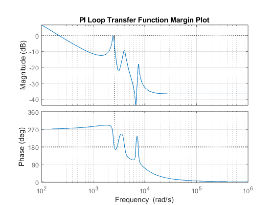
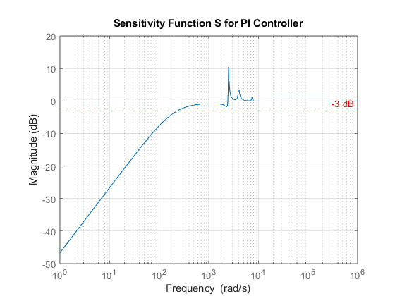
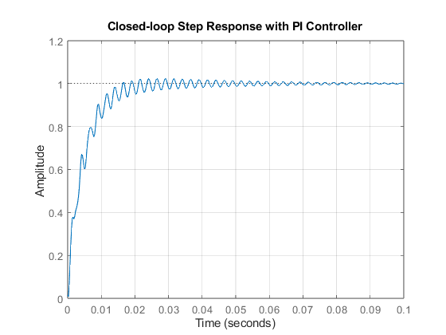
1.c mixed sensitivity weights
fbw_des = 250; % desired BW in Hz ws = 2*pi*fbw_des; % rad/s
Sensitivity bound Bs
As = 1e-4; % low-frequency bound, approx < -80 dB Ms = 1.5; % peak sensitivity bound Bs = (Ms*s + As*ws)/(s + ws); % desired upper bound on |S| W1 = 1/Bs; % mixsyn uses reciprocal weight
Control effort bound Bc
Bc = 10; % desired upper bound on |C*S| W2 = 1/Bc; % = 0.1
Complementary sensitivity bound Bt
ft = 500; % Hz wt = 2*pi*ft; Mt = 1.5; % peak T bound At = 0.01; % high-frequency T bound = -40 dB Bt = (Mt*wt + At*s)/(s + wt); % desired upper bound on |T| W3 = 1/Bt; % mixsyn reciprocal weight
Plot design bounds
figure;
bodemag(Bs, Bt, Bc*tf(1), {1,1e6});
grid on;
legend('B_s: upper bound on |S|', ...
'B_t: upper bound on |T|', ...
'B_c: upper bound on |CS|');
title('Performance Bounds');
saveCurrentFigure('2c_performance_bounds');
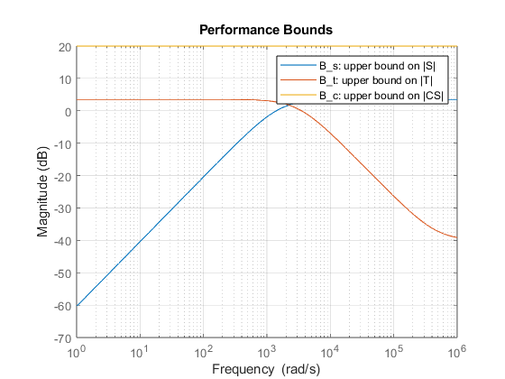
H-infinity mixed sensitivity synthesis
[Cinf, CL, gamma] = mixsyn(G,W1,W2,W3); Cinf = minreal(Cinf); fprintf('\nMixed sensitivity H-infinity controller:\n'); Cinf fprintf('\nAchieved gamma = %.6f\n', gamma);
Mixed sensitivity H-infinity controller:
Cinf =
A =
x1 x2 x3 x4 x5 x6
x1 -0.1047 1.501e-11 7.589e-12 6.537e-12 1.381e-11 1.023e-11
x2 2.778e+05 -1.577e+05 -7.908e+04 -5.973e+04 -1.411e+05 -9.214e+04
x3 2.445e+04 2.76e+04 2910 -2.088e+04 2166 -2.49e+04
x4 -7.933e-12 3.894e-12 8192 1.826e-12 3.646e-12 2.846e-12
x5 -1.12e-11 5.497e-12 2.829e-12 4096 5.147e-12 4.018e-12
x6 -1.806e-11 8.863e-12 4.561e-12 4.157e-12 8192 6.478e-12
x7 1.079e-12 -5.295e-13 -2.725e-13 -2.483e-13 -4.957e-13 2048
x8 -8.752e-12 4.296e-12 2.211e-12 2.015e-12 4.022e-12 3.14e-12
x7 x8
x1 8.171e-12 1.796e-11
x2 -8.104e+04 -1.566e+05
x3 -2940 -4.39e+04
x4 2.179e-12 4.917e-12
x5 3.077e-12 6.941e-12
x6 4.961e-12 1.119e-11
x7 -2.963e-13 -6.686e-13
x8 2048 5.424e-12
B =
u1
x1 32
x2 2.435e-15
x3 -1.482e-15
x4 1.861e-15
x5 2.627e-15
x6 4.236e-15
x7 -2.53e-16
x8 2.053e-15
C =
x1 x2 x3 x4 x5 x6 x7 x8
y1 382 431.2 61.43 -176.4 57.73 -312.8 -35.81 -612.5
D =
u1
y1 0
Continuous-time state-space model.
Achieved gamma = 1.029572
Closed-loop functions
Linf = minreal(G*Cinf); Sinf = feedback(1,Linf); Tinf = feedback(Linf,1); CSinf = minreal(Cinf*Sinf);
6 states removed. 8 states removed.
weighted plots
WS = minreal(W1*Sinf); WCS = minreal(W2*CSinf); WT = minreal(W3*Tinf); fprintf('Peak |S| = %.4f\n', norm(Sinf,inf)); fprintf('Peak |T| = %.4f\n', norm(Tinf,inf)); fprintf('Peak |C*S| = %.4f\n', norm(CSinf,inf));
1 state removed. 1 state removed. Peak |S| = 1.3129 Peak |T| = 0.9999 Peak |C*S| = 5.4277
Check T at 500 Hz
T_500 = abs(freqresp(Tinf,2*pi*500));
T_500_db = 20*log10(T_500);
fprintf('|T(j2pi500)| = %.4f = %.2f dB\n', T_500, T_500_db);
|T(j2pi500)| = 0.5204 = -5.67 dB
Check DC gain of S
S0 = abs(evalfr(Sinf,0)); S0_db = 20*log10(S0); fprintf('|S(0)| = %.4e = %.2f dB\n', S0, S0_db); figure; bodemag(WS, WCS, WT, {1,1e6}); grid on; yline(0,'k--','0 dB bound'); legend('|W_1S|','|W_2CS|','|W_3T|','0 dB'); title('Weighted Mixed-Sensitivity Verification'); saveCurrentFigure('weighted_mixed_sensitivity');
|S(0)| = 7.6466e-05 = -82.33 dB
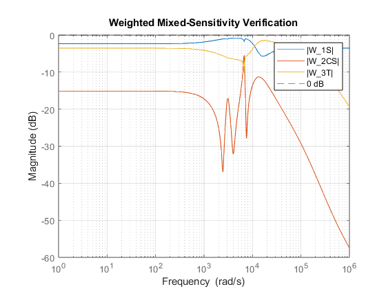
Physical bound plots
figure;
bodemag(Sinf, Bs, {1,1e6});
grid on;
legend('|S|','B_s');
title('Sensitivity vs Bound');
saveCurrentFigure('sensitivity_vs_Bs');
figure;
bodemag(Tinf, Bt, {1,1e6});
grid on;
legend('|T|','B_t');
title('Complementary Sensitivity vs Bound');
saveCurrentFigure('T_vs_Bt');
figure;
bodemag(CSinf, Bc*tf(1), {1,1e6});
grid on;
legend('|C_\infty S|','B_c = 10');
title('Control Effort vs Bound');
saveCurrentFigure('CS_vs_Bc');
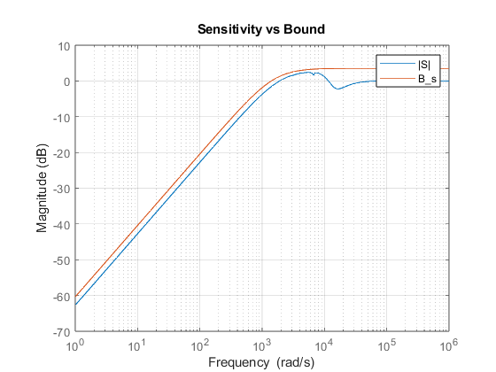
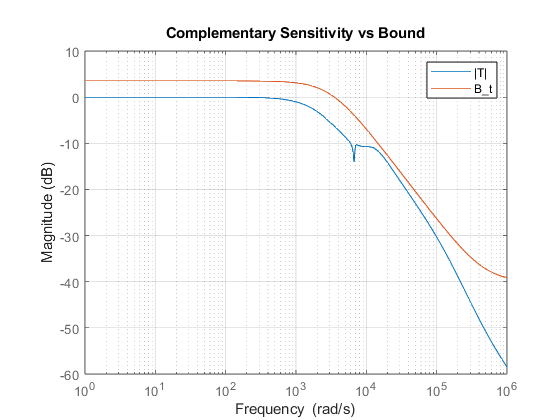
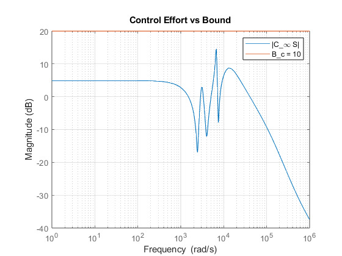
1.d
% PI controller from 1(b)
CPI = (0.217112*s + 0.01)/s;
Loop transfer functions
Lpi = minreal(G*CPI); Linf = minreal(G*Cinf);
6 states removed.
Gain and phase margins
[GM_pi, PM_pi, Wcg_pi, Wcp_pi] = margin(Lpi); [GM_inf, PM_inf, Wcg_inf, Wcp_inf] = margin(Linf); fprintf('\n===== PI Controller Margins =====\n'); fprintf('GM_PI = %.4f\n', GM_pi); fprintf('GM_PI = %.2f dB\n', 20*log10(GM_pi)); fprintf('PM_PI = %.2f deg\n', PM_pi); fprintf('Gain crossover frequency = %.4f rad/s\n', Wcp_pi); fprintf('Phase crossover frequency = %.4f rad/s\n', Wcg_pi); fprintf('\n===== H-infinity Controller Margins =====\n'); fprintf('GM_Hinf = %.4f\n', GM_inf); fprintf('GM_Hinf = %.2f dB\n', 20*log10(GM_inf)); fprintf('PM_Hinf = %.2f deg\n', PM_inf); fprintf('Gain crossover frequency = %.4f rad/s\n', Wcp_inf); fprintf('Phase crossover frequency = %.4f rad/s\n', Wcg_inf);
===== PI Controller Margins ===== GM_PI = 3.6303 GM_PI = 11.20 dB PM_PI = 97.09 deg Gain crossover frequency = 0.0057 rad/s Phase crossover frequency = 4243.8131 rad/s ===== H-infinity Controller Margins ===== GM_Hinf = 4.2899 GM_Hinf = 12.65 dB PM_Hinf = 75.18 deg Gain crossover frequency = 1367.7529 rad/s Phase crossover frequency = 7260.3923 rad/s
Bode plot of controllers
figure; bode(CPI,'b',Cinf,'r--',{1,1e6}); grid on; legend('C_{PI}','C_{\infty}'); title('Bode Plot of PI and H_{\infty} Controllers'); saveCurrentFigure('controller_bode');
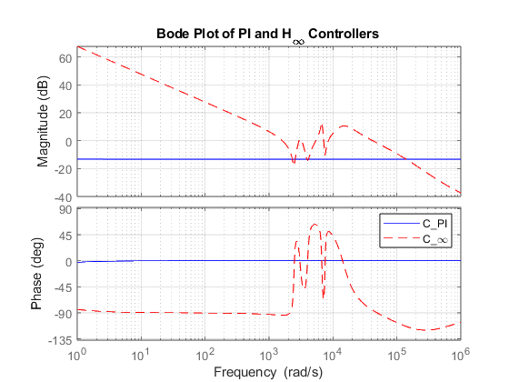
Bode plot of loop transfer functions
figure; bode(Lpi,'b',Linf,'r--',{1,1e6}); grid on; legend('G C_{PI}','G C_{\infty}'); title('Bode Plot of Loop Transfer Functions'); saveCurrentFigure('loop_transfer_bode');
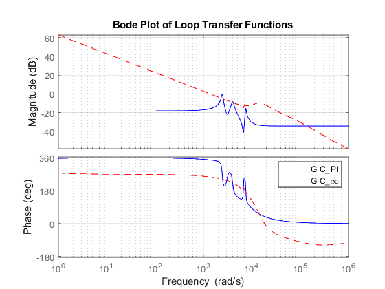